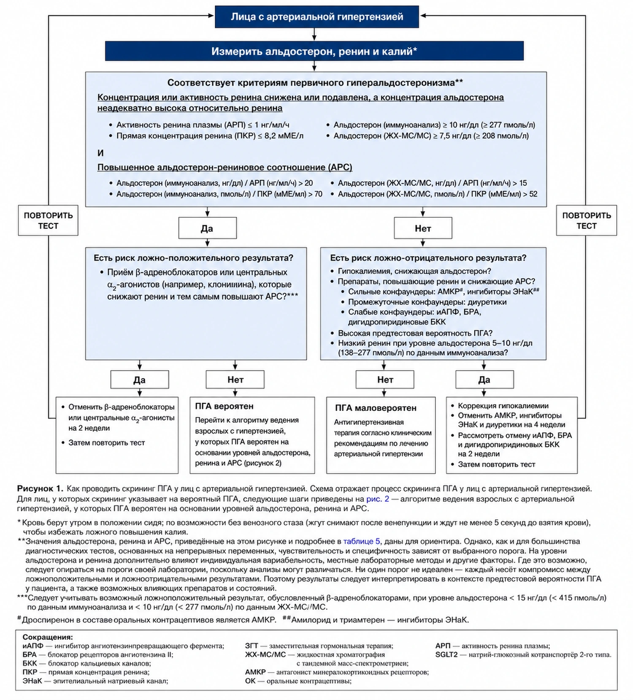
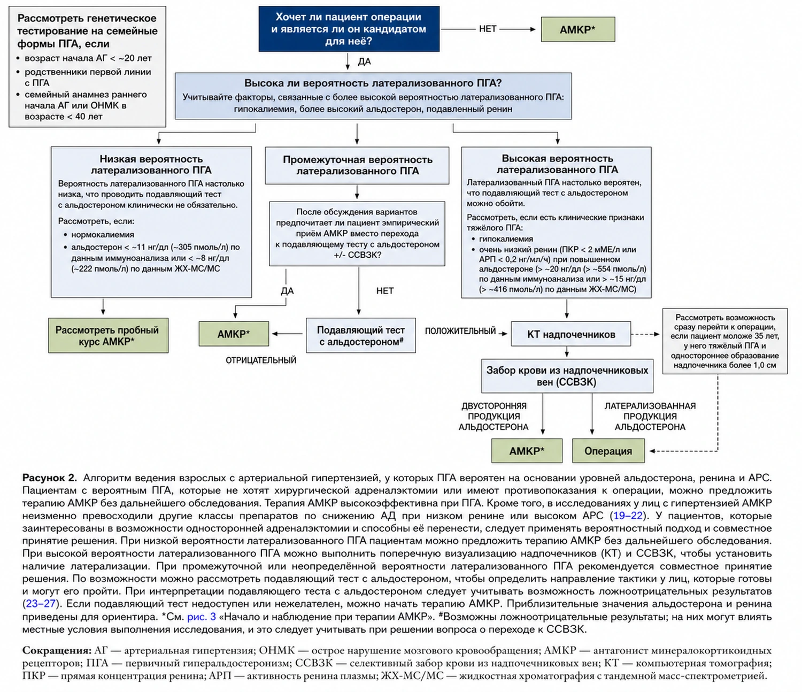
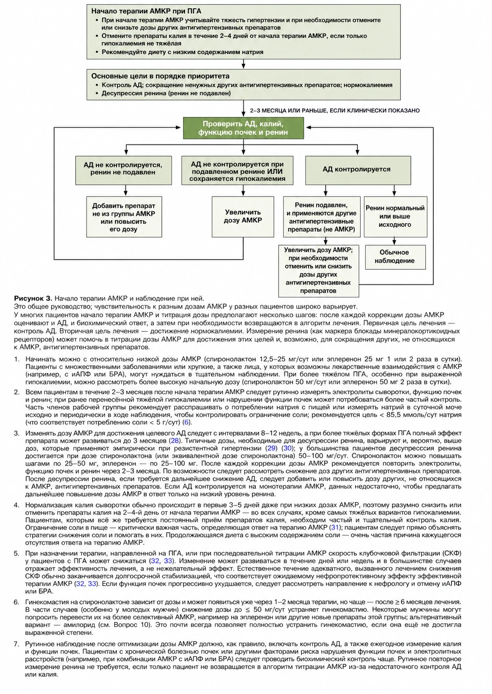

Все три рисунка приведены в русском переводе. Нажмите на рисунок, чтобы открыть его в полном размере; закрыть — клавишей Esc, крестиком или повторным нажатием на картинку.

Рисунок 1: скрининг на ПГА у лиц с артериальной гипертензией (перевод).

Рисунок 2: алгоритм ведения взрослых с артериальной гипертензией, у которых вероятен ПГА (перевод).

Рисунок 3: начало терапии АМКР и наблюдение при ней (перевод).